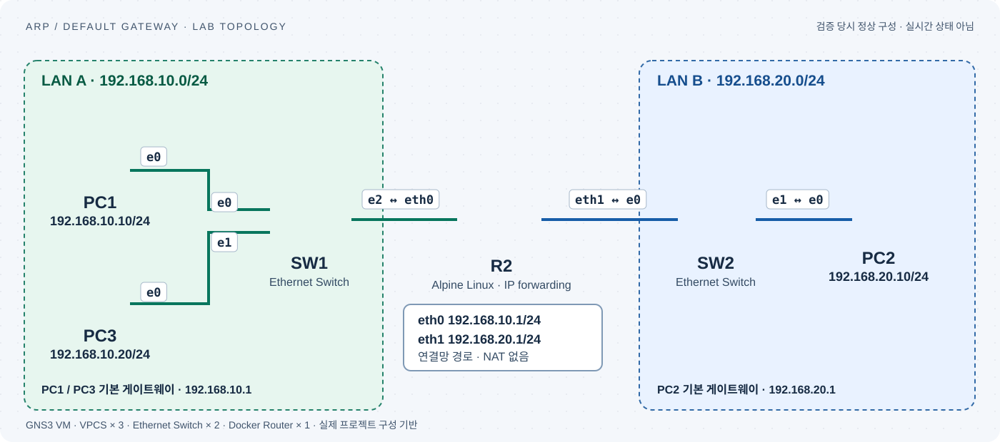

FOUNDATION · VERIFIED LAB
ARP / Default Gateway
패킷은 다른 서브넷으로 갈 때 누구의 MAC 주소를 찾을까요?
정상 통신과 세 가지 장애를 만들고, 라우터 양쪽의 실제 패킷으로 확인했습니다.
구성·검증 완료본인 설명 확인 완료Codex 대행 실행 · 2026.09.13
구성·검증은 Codex가 대행했고, 사용자의 핵심 답변 4개를 확인한 뒤 설명 노트에 보완 사항을 기록했습니다.
01 · TOPOLOGY
두 서브넷, 하나의 라우터
PC 3대 · 스위치 2대 · Alpine Linux 라우터
실제 네트워크와 연결하지 않은 가상 Lab입니다.

GNS3 2.2.61 · 기본 Ethernet Switch · Alpine Linux IP forwarding · NAT 없음. 구성도는 실제 프로젝트 데이터로 생성한 그림이며 UI 스크린샷이 아닙니다.
02 · VERIFY / BREAK / RECOVER
성공과 실패를 모두 검증했습니다.
장애 실험은 예상한 실패와 패킷 근거가
함께 확인되어야 통과로 판정했습니다.
표 읽는 순서: 설정 변경 → 테스트 실행 → 패킷으로 확인
ping은 모두 PC1에서 실행했습니다. PC2(192.168.20.10)는 다른 서브넷, PC3(192.168.10.20)는 같은 서브넷입니다. 장애 실험 03·05·07은 두 목적지를 비교하고, 복구 실험 04·06·08은 앞서 실패한 PC2 통신을 다시 확인합니다.
공통 절차: PC와 라우터의 ARP 캐시를 비움 → 3개 캡처 지점에서 기록 시작 → 아래 ping 실행 → ARP·IP·라우터 상태 확인. -c 3은 ping 3회를 요청하는 옵션이며, ARP 해결에 실패하면 ICMP를 보내기 전에 ‘도달 불가’로 끝날 수 있습니다.
| 번호 | 설정 변경 / 확인 목적 | 변경 후 수행한 테스트 | 관찰 결과 / 판정 | 근거 |
|---|---|---|---|---|
| 01 | 같은 서브넷 정상 /24 설정 같은 대역에서는 상대 PC를 직접 찾는지 확인 | PC1 → PC3 ping 192.168.10.20을 대상으로 실행 실제 테스트 명령PC1> ping 192.168.10.20 -c 3 PC1> show arp PC1> show ip | 3/3 응답. PC3 주소에 ARP 요청·응답 확인. ✓ 테스트·패킷 검증 통과 | 터미널 보기 ↗패킷 보기 ↗ |
| 02 | 다른 서브넷 정상 게이트웨이 .1 다른 대역으로 보낼 때 게이트웨이를 사용하는지 확인 | PC1 → PC2 ping + 라우터 양쪽 캡처 비교 192.168.20.10을 대상으로 실행 실제 테스트 명령PC1> ping 192.168.20.10 -c 3 PC1> show arp PC1> show ip | 3/3 응답. 게이트웨이 ARP, MAC 변경·IP 유지·TTL 감소 확인. ✓ 테스트·패킷 검증 통과 | 터미널 보기 ↗패킷 보기 ↗ |
| 03 | 잘못된 게이트웨이 PC1 GW를 192.168.10.254로 변경 게이트웨이 오류가 다른 대역 통신에만 영향을 주는지 확인 | PC1 → PC2 ping, 이어서 PC1 → PC3 ping 다른 대역과 같은 대역을 비교 실제 테스트 명령PC1> ping 192.168.20.10 -c 3 PC1> ping 192.168.10.20 -c 3 PC1> show arp PC1> show ip | PC2: 게이트웨이 도달 불가. PC3: 3/3 응답. .254를 찾는 ARP에 응답 없음. ✓ 테스트·패킷 검증 통과 | 터미널 보기 ↗패킷 보기 ↗ |
| 04 | 게이트웨이 복구 PC1 GW를 192.168.10.1로 복구 03번의 실패가 게이트웨이 수정으로 해결되는지 확인 | PC1 → PC2 ping을 다시 실행 03번과 동일한 목적지로 재검증 실제 테스트 명령PC1> ping 192.168.20.10 -c 3 PC1> show arp PC1> show ip | PC2: 3/3 응답. 올바른 게이트웨이 .1의 ARP 응답과 ICMP 왕복 확인. ✓ 테스트·패킷 검증 통과 | 터미널 보기 ↗패킷 보기 ↗ |
| 05 | 잘못된 마스크 PC1 마스크를 /24 → /16으로 변경 마스크가 틀리면 다른 대역의 PC를 이웃으로 판단하는지 확인 | PC1 → PC2 ping, 이어서 PC1 → PC3 ping ARP 요청이 게이트웨이와 PC2 중 누구를 찾는지 비교 실제 테스트 명령PC1> ping 192.168.20.10 -c 3 PC1> ping 192.168.10.20 -c 3 PC1> show arp PC1> show ip | PC2: 도달 불가. PC3: 3/3 응답. PC2 주소 .20.10에 직접 ARP, 응답 없음. ✓ 테스트·패킷 검증 통과 | 터미널 보기 ↗패킷 보기 ↗ |
| 06 | 마스크 복구 PC1 마스크를 /16 → /24로 복구 05번의 실패가 올바른 대역 판단으로 해결되는지 확인 | PC1 → PC2 ping을 다시 실행 05번과 동일한 목적지로 재검증 실제 테스트 명령PC1> ping 192.168.20.10 -c 3 PC1> show arp PC1> show ip | PC2: 3/3 응답. PC2 직접 ARP 대신 게이트웨이 .10.1을 찾아 통신 성공. ✓ 테스트·패킷 검증 통과 | 터미널 보기 ↗패킷 보기 ↗ |
| 07 | 게이트웨이 중단 R2 eth0를 down PC 설정이 맞아도 게이트웨이 포트가 내려가면 실패하는지 확인 | PC1 → PC2 ping, 이어서 PC1 → PC3 ping 다른 대역 실패와 같은 대역 정상 여부를 함께 확인 실제 테스트 명령PC1> ping 192.168.20.10 -c 3 PC1> ping 192.168.10.20 -c 3 PC1> show arp PC1> show ip | PC2: 게이트웨이 도달 불가. PC3: 3/3 응답. .10.1 ARP 무응답·eth0 DOWN 확인. ✓ 테스트·패킷 검증 통과 | 터미널 보기 ↗패킷 보기 ↗ |
| 08 | 인터페이스 복구 R2 eth0를 up 07번의 실패가 포트 복구로 해결되는지 확인 | PC1 → PC2 ping을 다시 실행 PC1의 IP·마스크·GW는 바꾸지 않고 재검증 실제 테스트 명령PC1> ping 192.168.20.10 -c 3 PC1> show arp PC1> show ip | PC2: 3/3 응답. eth0 UP, 게이트웨이 ARP 응답과 ICMP 왕복 확인. ✓ 테스트·패킷 검증 통과 | 터미널 보기 ↗패킷 보기 ↗ |
| 09 | 재시작 유지 정상 설정 저장 후 전체 Lab 노드 stop/start 장비를 다시 켜도 주소와 라우팅 설정이 유지되는지 확인 | IP를 다시 입력하지 않고 PC1 → PC2 ping show ip·show arp와 라우터 주소·경로도 확인 실제 테스트 명령PC1> ping 192.168.20.10 -c 3 PC1> show arp PC1> show ip | PC2: 3/3 응답. 저장된 설정 유지 확인. Windows 재부팅 시험은 아님. ✓ 테스트·패킷 검증 통과 | 터미널 보기 ↗패킷 보기 ↗ |
별도로 PC2 → PC1 역방향 ping 3/3 성공을 확인했습니다. 재시작은 Lab 노드 stop/start 기준이며 Windows 전체 재부팅 검증은 아닙니다.
03 · PACKET EVIDENCE
IP는 그대로, MAC은 다음 링크에 맞게.
같은 ICMP 식별자와 순번을 가진 요청 3개를
라우터 양쪽 캡처에서 대조했습니다.
게이트웨이 MAC으로 전달
- 출발지 IP
- 192.168.10.10
- 목적지 IP
- 192.168.20.10
- 출발지 MAC
- 00:50:79:66:68:00 · PC1
- 목적지 MAC
- 02:42:d4:39:68:00 · R2 eth0
- TTL
- 64
목적지 PC의 MAC으로 전달
- 출발지 IP
- 192.168.10.10
- 목적지 IP
- 192.168.20.10
- 출발지 MAC
- 02:42:d4:39:68:01 · R2 eth1
- 목적지 MAC
- 00:50:79:66:68:02 · PC2
- TTL
- 63
다른 서브넷으로 보낼 때 목적지 IP가 게이트웨이 IP로 바뀌지 않았습니다. 이 Lab은 NAT 없이 라우팅하며, 라우터에서 Ethernet 헤더가 바뀌고 TTL이 1 감소합니다.
04 · TROUBLESHOOT
ARP가 찾는 주소에 원인이 드러납니다.
192.168.10.254는 누구인가?
존재하지 않는 GW에 ARP를 보내고 응답을 받지 못했습니다. 올바른 .1로 복구하자 통신이 회복됐습니다.
멀리 있는 PC를 이웃으로 판단
PC2 주소 192.168.20.10을 직접 ARP로 찾았습니다. /24로 되돌리면 게이트웨이를 통해 전달됩니다.
주소는 맞지만 응답이 없다
올바른 .1에 ARP를 보냈지만 eth0가 내려가 응답이 없었습니다. eth0 up 후 정상화됐습니다.
모든 실험은 ARP 캐시를 비운 뒤 수행했습니다. 장애 캡처에 포함된 성공 ICMP는 같은 서브넷의 PC3 통신입니다. 대상 IP를 함께 확인해야 합니다.
05 · ORIGINAL EVIDENCE
결과를 직접 확인할 수 있는 자료
설명부터 원본 패킷, 재현 가능한 프로젝트까지.
전체 실험 보고서
주소 계획, 명령, 관찰 결과, 검증 범위와 재현 절차를 정리했습니다.
전체 보고서 읽기 ↗Lab 프로젝트 백업
정상 설정과 VPCS startup 포함. Alpine 이미지는 대상 서버에서 별도로 받아야 합니다.
프로젝트 다운로드 ↓PCAP 27개와 검증 결과
실험 9건의 세 지점 캡처, 명령 출력, 패킷 재검증 도구를 함께 제공합니다.
전체 자료 ZIP ↓이번 검증에는 관리형 스위치 MAC Table CLI, VLAN/STP, 동적 라우팅 프로토콜을 포함하지 않았습니다.
06 · EXPLAIN IN MY OWN WORDS
본인 설명 확인을 마쳤습니다.
2026.09.13 · 사용자가 작성한 핵심 답변에 Codex가 적용 조건과 진단 한계를 보완했습니다.
IP와 MAC의 목적지가 왜 다른가?
이번 NAT 없는 라우팅 실험에서 목적지 IP는 최종 수신자인 PC2를 가리키고, 목적지 MAC은 현재 L2 구간에서 프레임을 받을 다음 장비를 가리킨다. 같은 서브넷이면 상대 PC의 MAC, 다른 서브넷이면 선택한 다음 홉인 게이트웨이의 MAC을 사용한다.
Gateway 오류와 Mask 오류를 ARP로 구별할 수 있는가?
ARP가 찾는 주소로 원인을 좁힐 수 있다. 이번 실험에서 /16으로 잘못 설정한 PC1은 원격 PC2 주소에 직접 ARP했고, 잘못된 GW를 설정한 경우에는 .254를 ARP했다. 다만 원격 IP에 직접 ARP하면 마스크뿐 아니라 경로 설정도 확인해야 한다. 게이트웨이 ARP에 응답이 없으면 잘못된 GW 주소, 게이트웨이 인터페이스 중단, VLAN·링크 문제 등을 확인해야 하며 ARP만으로 원인을 확정할 수는 없다.
같은 서브넷은 왜 계속 통신되는가?
이번 구성에서 PC1과 PC3는 서로를 같은 서브넷으로 판단하므로 게이트웨이를 거치지 않고 상대 IP를 ARP해 얻은 MAC으로 직접 통신한다. 따라서 실험한 GW 오류·/16 마스크 오류·라우터 eth0 중단 중에도 PC3 통신은 성공했다. 모든 종류의 마스크 오류에서 같은 서브넷 통신이 보장되는 것은 아니다.
ARP 캐시가 남아 있으면 어떻게 달라지는가?
유효한 캐시가 있으면 해당 다음 홉의 IP→MAC 정보를 재사용해 새 ARP 요청 없이 프레임을 보낼 수 있다. 그러나 캐시 항목의 존재는 장비나 통신 경로가 살아 있다는 증거가 아니다. 인터페이스 중단 직후에도 기존 MAC으로 전송하다가 응답을 받지 못할 수 있다. 이번 장애 실험은 캐시를 비운 조건이며 캐시가 남은 장애 상황은 별도로 실험하지 않았다.
Lab 구성·실행은 Codex 대행, 핵심 답변은 사용자 작성입니다. 이번 주제의 설명 확인을 완료했으며, MAC Table CLI와 캐시가 남은 장애 상황은 별도 실험으로 남깁니다.
설명 노트 다운로드 ↓